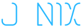

Snapshot 22 Nov, real dataPreview · not linked from the app
J8NIX v2: pick a direction
Three clickable previews of the same real data. Tap one, try Home, a mission, Gates and Proof. Buttons are preview only: nothing is sent.

Snapshot 22 Nov, real dataPreview · not linked from the app
Three clickable previews of the same real data. Tap one, try Home, a mission, Gates and Proof. Buttons are preview only: nothing is sent.